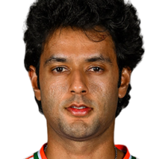
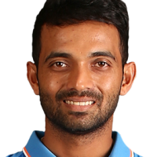
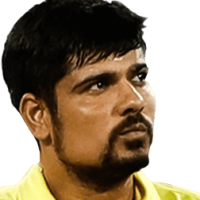
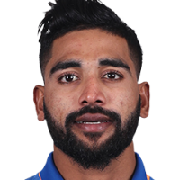

That's that! CSK's winning run against RCB at Fort Chepauk continues. There is a review, but more in desperation, I think. Aims for the yorker that hits Dube's pad and goes to the fine leg fence. Ball tracker confirms the ball pitched outside leg. Ruturaj Gaikwad has made a winning start to his captaincy tenure.
RCB vs CSK, 1st Match at Chennai, IPL, Mar 22 2024 - Ball by Ball Commentary
RESULT
1st Match (N), Chennai, March 22, 2024, Indian Premier League
Prev
Next(18.4/20 ov, T:174) 176/4
CSK won by 6 wickets (with 8 balls remaining)
New
CSK
Full commentary
IPL 2024 gets off to a rousing start with CSK getting the better of RCB at Chepauk yet again. If you missed any of the action, Deiva's report will be in soon. That's it from us tonight. Thanks everyone for tuning in. It's a double-header tomorrow and we will be live nice and early to bring all the action. Till then, this is me Ashish signing off on behalf of Sidharth, Thilak and Chandan. Ciao!
Mustafizur Rahman is the player of the match for his 4 for 29.
CSK captain, Ruturaj Gaikwad: Total control right from the start. 2-3 overs here and there but once the spinners came on, we were in control. 10-15 runs lesser would have been great but they came back well. [Turning point?] To get Maxwell and even Faf out, the quick wickets were the turning point. Helps to control the next five-six overs. That was the main point. [Captaincy debut] I have always enjoyed it. Haven't felt the additional pressure, right from the state side. Not even a single time I felt pressurized by anything. Obviously had Mahi bhai with me. [On the chase] Everyone is a stroke-player in our side, even Jinx. There is role clarity in the batting unit. Helps a lot. Lots of positives, but two-three things to work on. The batting, everyone chipped in. If we had a few batters from the top-order batting through, the chase would have been easier.
Presentation time.
Some stat nuggets from Sampath:
- This is the 8th consecutive win for CSK vs RCB at Chepauk, the longest winning streak for any team against an opponent at a venue in IPL. Next best streak is for MI, who have won their last seven matches vs KKR at Wankhede.
- Ravindra Jadeja unbeaten in a successful IPL chase for the 27th time, joint-most by any batter, alongside MS Dhoni.
Amey: "Credit to Jadeja for playing only 2 dot balls and keeping the scoreboard moving, especially when Dube was struggling."
Afeef: "RCB needed a better plan than just bowling short balls. Alzarri could've been used better, I feel."
Rachin Ravindra: Pretty complete performance by us. We held our nerves. Batting with Jinx [Rahane] and Rutu, very calm heads. Lucky we had 4-5 days of good training. I find it easier going from red ball to white ball because I think the positions are the same, [Form] It's been good. The wickets were a bit different in training but I backed myself in the game. The experience of the amazing crowd was great. Helps a lot.
Faf du Plessis: You have to get ahead in the first six overs. Chennai squeeze you with their spinners. We lost too many wickets in the first six overs. We were 15-20 runs short on a pitch that wasn't as bad as we played in the first ten overs We were always a little bit behind trying to get ahead of the game. They were always ahead of the game. [Short ball plan] Dube wasn't comfortable with the short ball, we were trying to get a few wickets in the middle overs. But didn't happen. [Batting first] If you look at the stats, it is very in favour of batting first. It looked a bit on the drier side. The spinners, in the second innings, the ball started to grip a bit. We backed our seamers against Dube. But batting first was the right decision. [On DK and Rawat] Really good for Dinesh setting up the season for someone who hasn't really played a lot of cricket in the last year. Really important knock for himself. Rawat showed some really promise even last year. He showed composure.
11.55pmAnd the wait continues. That is eight wins on the bounce for CSK against RCB at Chepauk. And a clinical win it was to kick-off IPL 2024. It was Rachin Ravindra, on IPL debut, who gave the chase a flying start with a 15-ball 37. Rahane also did his bit scoring a quick 27. RCB did come back into the game with a few quick wickets as they adopted the short ball plan. But I felt they over-did it. Dube was clearly struggling initially, but once he survived, run-scoring was easy. Jadeja did his bit in rotating the strike, and eventually CSK got home with eight balls to spare. While RCB's middle order collapsed, CSK had all their batters contributing. And that was the difference between the two teams.
CSK vs RCB
MATCHES
W
W
L
W
W
18.3
6
Alzarri Joseph to Dube, SIX runs
TONKED! There was some aggression from Dube on that six. Banged in short outside off. He unleashes the pull and sends the ball soaring over deep backward square leg.
18.2
•
Alzarri Joseph to Dube, no run
Banged in short now, good bumper this aiming at Dube's body. He is beaten for pace
18.2
1w
Alzarri Joseph to Dube, 1 wide
Goes fuller and down leg even as Dube was looking to back away. Called a wide.
18.1
1
Alzarri Joseph to Jadeja, 1 run
Back of a length ball on off, he pulls to deep midwicket
end of over 188 runs
CSK: 164/4CRR: 9.11 • RRR: 5.00 • Need 10 runs from 12b
Shivam Dube28 (25b 4x4)
Ravindra Jadeja24 (16b 1x6)
Mohammed Siraj 4-0-38-0
Alzarri Joseph 3-0-30-0
17.6
•
Siraj to Dube, no run
Banged in short outside off, he misses the ramp again
17.5
4
Siraj to Dube, FOUR runs
He gets another four to his name! Slower back of a length ball on off. He stands tall and flat-bats it over the bowler's head. Mid-off and mid-on were in
17.4
•
Siraj to Dube, no run
Low full toss outside off, he whacks it to extra cover. No run there
17.3
•
Siraj to Dube, no run
Banged in short outside off, he misses his ramp as the ball goes to the keeper.
17.2
4
Siraj to Dube, FOUR runs
Back of a length ball and he's found the gap to perfection. On leg stump, he gets across, and pulls it neatly in the gap between square leg and deep fine leg
17.1
•
Siraj to Dube, no run
Very high full toss, almost a waist-high no ball. It was on the stump and Dube can only bunt it to extra cover
Siraj
end of over 1716 runs
CSK: 156/4CRR: 9.17 • RRR: 6.00 • Need 18 runs from 18b
Shivam Dube20 (19b 2x4)
Ravindra Jadeja24 (16b 1x6)
Alzarri Joseph 3-0-30-0
Cameron Green 3-0-27-2
16.6
1
Alzarri Joseph to Dube, 1 run
Back of a length ball on off, he pushes it to long off for a run
All set to continue
16.5
4b
Alzarri Joseph to Dube, 4 byes
Beats the batter, beats the keeper and CSK collect four byes! That was banged in short at pace outside off. Dube looks for a ramp, misses as the ball hurries to Rawat who leaps with both hands up. The ball clips the tip of his fingers and runs away. Looks like he has hurt his fingers as well. Out comes the physio.
16.5
1w
Alzarri Joseph to Dube, 1 wide
Another wayward bouncer down leg. Called a wide again
16.4
4
Alzarri Joseph to Dube, FOUR runs
Oh, that's so neatly done by Dube. Back of a length ball on off. Dube stays leg side of the ball and just helps it past point. Used the pace of the ball much to his advantage
16.4
1w
Alzarri Joseph to Dube, 1 wide
Banged in short and again that is quite short outside. A wide is a result
16.3
1
Alzarri Joseph to Jadeja, 1 run
Back of a length ball outside off, he pulls it to deep midwicket
16.2
2
Alzarri Joseph to Jadeja, 2 runs
Banged in short at pace hurrying Jadeja who mistimes his pull towards long on. But because he had completely miscued it, the bowler had to sprint across. They take two.
16.1
2
Alzarri Joseph to Jadeja, 2 runs
Back of a length ball outside off, he thrashes it away to deep point. Some confusion and the result is an over-throw. What happened is a throw was fired from the deep who hit direct at the striker's end. Rawat, meanwhile feels there is a chance of a run out at the non-striker's end. He lobs the ball, misses and there is no one backing up
end of over 1612 runs
CSK: 140/4CRR: 8.75 • RRR: 8.50 • Need 34 runs from 24b
Ravindra Jadeja19 (13b 1x6)
Shivam Dube15 (16b 1x4)
Cameron Green 3-0-27-2
Mohammed Siraj 3-0-30-0
15.6
1
Green to Jadeja, 1 run
Shimmies down the track and scythes the good length ball to deep cover
15.5
1
Green to Dube, 1 run
Back of a length ball on the stumps. He is on the backfoot as he gets a thick inside-edge back onto the pad and close to the stumps. They pinch a single
Over the wicket
15.4
1
Green to Jadeja, 1 run
Shimmies down the track to the back of a length ball outside off and slaps it to deep point
15.3
3
Green to Dube, 3 runs
Nicely done. Banged in short outside off, he stays still and ramps it in the gap to the right of deep point. The fielder gets across and saves a run. Oh, hang on...was Dagar in contact with the ropes there? On first replay , it seemed that way. Wasn't checked though
15.3
1w
Green to Dube, 1 wide
Another bouncer but this one is too short. Called a wide. One bouncer for the over as well.
15.2
4
Green to Dube, FOUR runs
Finds the gap. Banged in short on the hips of Dube as he helps it and pierces the gap between deep backward square leg and fine leg.
15.1
1
Green to Jadeja, 1 run
Back of a length ball just outside off, he works it with soft hands to wide long-on but only for a run
CSK need 46 off 30. RCB need wickets. Here's Green from around the wicket
Hari: "RCB's fielding department looks solid. Faf and Virat at long on and off frees up Maxi who can be kept at other hotspots like Deep square leg or deep midwicket. "
end of over 157 runs
CSK: 128/4CRR: 8.53 • RRR: 9.20 • Need 46 runs from 30b
Shivam Dube7 (13b)
Ravindra Jadeja16 (10b 1x6)
Mohammed Siraj 3-0-30-0
Glenn Maxwell 1-0-7-0
Strategic time-out time
Binod: "Dagar's two tight overs when CSK were flying will be an impact."
14.6
•
Siraj to Dube, no run
Slower short ball beats Dube all ends up. Was bowled at 131kph outside off. Dube is early into his pull with the ball going to Rawat on the bounce
14.5
1
Siraj to Jadeja, 1 run
Another short ball on Jadeja's hips that he pulls to Maxwell once more. They are doing it well, for now
14.4
1
Siraj to Dube, 1 run
Another bouncer on middle. Dube controls his pull to the right of deep backward square leg for only a run this time around
14.3
1
Siraj to Jadeja, 1 run
Banged in short just outside off, he pulls it down and in control to deep backward square leg
14.2
2
Siraj to Jadeja, 2 runs
Back of a length down leg, he helps it to Green at deep fine leg. A slight misfield and that is enough for Jadeja to steal a second
14.1
2
Siraj to Jadeja, 2 runs
On a length on the pads of Jadeja who clips it to the right of deep square leg. The fielder does well to keep them down to two. Maxwell it was, who hared across
Siraj back
Harchon: "It's still CSK's game to lose"
end of over 147 runs
CSK: 121/4CRR: 8.64 • RRR: 8.83 • Need 53 runs from 36b
Shivam Dube6 (11b)
Ravindra Jadeja10 (6b 1x6)
Glenn Maxwell 1-0-7-0
Cameron Green 2-0-15-2
13.6
•
Maxwell to Dube, no run
Huge appeal for caught behind but think that went off the pad. Not out says the umpire. Pushed quicker down leg, he looks to work it fine, can't get a bat on it. And the ball flicks his pad through to the keeper.
13.5
•
Maxwell to Dube, no run
Short and wide, he rocks back and hammers the cut but straight to point
13.4
•
Maxwell to Dube, no run
Flatter on leg stump, he stays back and bunts it back to Maxwell
13.3
1
Maxwell to Jadeja, 1 run
Slower through the air on middle, he pushes to long-on
13.2
6
Maxwell to Jadeja, SIX runs
PUMPED! Tossed up just on the middle. Jadeja jumps down, reaches the pitch of the ball and tonks him over long-on
13.1
•
Maxwell to Jadeja, no run
Floated on off stump, he looks to drive, gets a thick inside-edge back onto the pad
The offspin of Maxwell now. Two left-handers at the crease. Maxwell is around the wicket.
end of over 135 runs • 1 wicket
CSK: 114/4CRR: 8.76 • RRR: 8.57 • Need 60 runs from 42b
Ravindra Jadeja3 (3b)
Shivam Dube6 (8b)
Cameron Green 2-0-15-2
Alzarri Joseph 2-0-18-0
12.6
1
Green to Jadeja, 1 run
Slower back of a length ball outside off. Was bowled at 126kph. Jadeja pulls it down and towards deep midwicket
12.5
2
Green to Jadeja, 2 runs
Goes fuller now well outside off, he leans into the drive to the left of deep cover. They get two.
12.5
1w
Green to Jadeja, 1 wide
Another bouncer but this one is way too short. Rawat leaps and saves a few runs
12.4
•
Green to Jadeja, no run
Length ball on off, he pushes towards point and was looking for a run. Is sent back.
No Dhoni, yet or the right-handed Raina. Here's Ravindra Jadeja. Green is around the wicket
12.3
W
Green to Mitchell, OUT
The short ball does the trick for Green! Banged in short outside off, Mitchell was looking to go over long-on. Does not get any power on the pull and Patidar makes no mistake at long-on.
Daryl Mitchell c Patidar b Green 22 (18b 0x4 2x6 23m) SR: 122.22
12.2
1
Green to Dube, 1 run
Another miscue and the ball falls in no-man's land. Banged in short just above his hip. He mistimes his pull completely but the balls falls around the vacant square leg area
12.1
•
Green to Dube, no run
Loud, loud appeal as Dube looks for a pull and gets beaten. But the umpire is unmoved. Faf has asked for a review. Don't think there was any bat there, though. Bouncer just outside off. He eyes the pull, is late again on it. Rawat was absolutely certain there was an edge. But replays confirm there was a gap between bat and ball.
end of over 127 runs
CSK: 109/3CRR: 9.08 • RRR: 8.12 • Need 65 runs from 48b
Daryl Mitchell22 (17b 2x6)
Shivam Dube5 (6b)
Alzarri Joseph 2-0-18-0
Cameron Green 1-0-10-1
Soumya: "No Maxwell yet. Will RCB gamble him against Dube and Daryl?" Don't think so
11.6
2
Alzarri Joseph to Mitchell, 2 runs
Slower short of a length ball on off stump. Mitchell waits for it and pulls in the gap between midwicket and long-on. They scurry back for two
11.5
1
Alzarri Joseph to Dube, 1 run
Another short ball on off stump. Dube, once more can't get a clean connection. Shanks it to deep square leg.
11.4
1
Alzarri Joseph to Mitchell, 1 run
Joseph is rushing the batters for sure. Banged in short at 143.9kph. Mitchell is camped on the backfoot looking for the pull. But even then he can only miscue to long on
11.3
1
Alzarri Joseph to Dube, 1 run
Banged in short around off stump, Dube is late on the pull again and miscues towards deep midwicket
11.2
1
Alzarri Joseph to Mitchell, 1 run
Back of a length ball at 142kph on off stump. He goes on the backfoot but ends up bunting it towards long on
11.1
1
Alzarri Joseph to Dube, 1 run
Back of a length ball outside off, he cuts it to deep point

Shivam Dube vs Alzarri Joseph
BALLS
22
RUNS
21
OUTS
1
4s/6s
1/0
Joseph back on from over the wicket
end of over 1110 runs • 1 wicket
CSK: 102/3CRR: 9.27 • RRR: 8.00 • Need 72 runs from 54b
Shivam Dube2 (3b)
Daryl Mitchell18 (14b 2x6)
Cameron Green 1-0-10-1
Mayank Dagar 2-0-6-0
10.6
1
Green to Dube, 1 run
Flies away to deep third. Was a back of a length ball well outside off. He flashes at it and gets a thick outside edge down to deep third on the bounce.
10.5
•
Green to Dube, no run
Another short ball at pace! Banged in short at 133.6kph as Dube looks for a pull and misses. That looked quicker than 133kph to be honest
10.4
1
Green to Mitchell, 1 run
Length on the pads of Mitchell who shuffles across and works him to deep backward square leg
10.3
1
Green to Dube, 1 run
Back of a length ball outside off. He pulls it, not with too much control towards deep midwicket
Shivam Dube is the Impact sub for Mustafizur Rahman. Green is over the wicket to him
IMPACT SUBCSK
S Dube
Mustafizur Rahman
10.2
W
Green to Rahane, OUT
Excellent catch by Maxwell at square leg and Rahane's sprightly knock ends. Back of a length ball but the line was crucial here. It was outside off, which meant Rahane had to fetch it and he could not control his pull. Maxwell is a few steps in from the boundary. But he adjusts well, and takes a reverse-cupped catch over his head
Ajinkya Rahane c Maxwell b Green 27 (19b 0x4 2x6 26m) SR: 142.1
10.1
6
Green to Rahane, SIX runs
Hooked for a hug six! Back of a length ball on off stump, he gets across and pulls it with disdain over backward square leg's head
Shyam: "@Charan: I think its time we move forward and not go back in time. There are plenty of younger talent fighting for that spot. No reason to go to Rahane."
10.1
1w
Green to Rahane, 1 wide
Wide first up. Was a length ball but sprays it down leg.
Cameron Green gets a bowl now. Starts from over the wicket.
end of over 104 runs
CSK: 92/2CRR: 9.20 • RRR: 8.20 • Need 82 runs from 60b
Ajinkya Rahane21 (17b 1x6)
Daryl Mitchell17 (13b 2x6)
Mayank Dagar 2-0-6-0
Karn Sharma 2-0-24-1
9.6
1
Dagar to Rahane, 1 run
Slightly short on middle stump, Rahane hangs back and pats it to long on for a run
9.5
1
Dagar to Mitchell, 1 run
Full outside off, he digs it to cover for a quick run
9.4
•
Dagar to Mitchell, no run
Keeps it quicker and on a length on middle. Mitchell can only mistime it back towards the bowler
9.3
•
Dagar to Mitchell, no run
Flatter on middle stump, he defends
9.2
1
Dagar to Rahane, 1 run
Shimmies down the track and outside the line of leg stump, giving himself some room. Dagar adjust his length as Rahane drives to long off
9.1
1
Dagar to Mitchell, 1 run
On a length on middle and leg, he brings out the sweep past short fine leg

Ajinkya Rahane vs Karn Sharma
BALLS
48
RUNS
55
OUTS
3
4s/6s
4/1
end of over 915 runs
CSK: 88/2CRR: 9.77 • RRR: 7.81 • Need 86 runs from 66b
Daryl Mitchell15 (9b 2x6)
Ajinkya Rahane19 (15b 1x6)
Karn Sharma 2-0-24-1
Mayank Dagar 1-0-2-0
Sai: "I wouldn't mind a Super Over for the start of this tournament :)" I will
8.6
1
Karn to Mitchell, 1 run
Very full once more on the stumps, he eases it to long on
8.5
1
Karn to Rahane, 1 run
A touch fuller on the stump, he pushes towards long-on. Was looking for a second but the fielder is quick on the ball
8.4
1
Karn to Mitchell, 1 run
Dragged down on middle and leg, as Mitchell hangs back and works it to the on-side
8.3
6
Karn to Mitchell, SIX runs
This time over long off! Floated slower outside off, he goes over long off now. Such clean striking. Free swing of the blade from Mitchell
8.2
6
Karn to Mitchell, SIX runs
Finally connect at one! Tossed up just a touch but that was right in Mitchell's arc. He extends his arm and swings it miles over long on
8.1
•
Karn to Mitchell, no run
Darted quicker on off stump, he prods half-forward and pushes to cover
end of over 82 runs
CSK: 73/2CRR: 9.12 • RRR: 8.41 • Need 101 runs from 72b
Ajinkya Rahane18 (14b 1x6)
Daryl Mitchell1 (4b)
Mayank Dagar 1-0-2-0
Karn Sharma 1-0-9-1
7.6
•
Dagar to Rahane, no run
Pushes the length ball quicker on leg stump, Rahane goes back looking for a flick but misses and is rapped on the pad with the ball going down leg
7.5
1
Dagar to Mitchell, 1 run
A touch quicker outside off, he pushes to Faf at cover who flicks in back-handed flick. But Rahane was in
7.4
•
Dagar to Mitchell, no run
Ooh, some turn outside off. Mitchell is camped on the backfoot and defends towards cover
7.3
•
Dagar to Mitchell, no run
Shimmies down the track but Dagar shortens the length and Mitchell has to defend
7.2
•
Dagar to Mitchell, no run
A tad short just outside off, he stays back and eases to backward point
7.1
1
Dagar to Rahane, 1 run
Length outside off, he pushes it through point for a run
Daryl Mitchell comes in at No. 4. Mayank Dagar also comes in from around the wicket
Charan: "Anybody in for Rahane in T20 WC ?" Too early for this
Elsewhere in Indian football, Igor Stimac has ambitions to be the greatest ever Indian football team manager, with aims to achieve a first-ever entry to the third round of the FIFA World Cup qualifiers. Yet, with India unable to beat a depleted Afghanistan side and having gone five games (nearly nine hours) without a goal, questions ought to be asked.
end of over 79 runs • 1 wicket
CSK: 71/2CRR: 10.14 • RRR: 7.92 • Need 103 runs from 78b
Ajinkya Rahane17 (12b 1x6)
Karn Sharma 1-0-9-1
Yash Dayal 3-0-28-1
6.6
W
Karn to Ravindra, OUT
He's gone now! One shot too many for Rachin. Was a length ball on middle and leg. He sweeps eyeing another six, but doesn't connect as cleanly. Deep backward square leg settles himself and takes a comfortable catch. Lovely debut for Rachin who falls for a 15-ball 37.
Rachin Ravindra c Patidar b Sharma 37 (15b 3x4 3x6 33m) SR: 246.66
6.5
6
Karn to Ravindra, SIX runs
Dropped short and he pumps it for six! On off stump, he rocks back and hammers him over deep midwicket fielder's head.
Ashish: "Was it Yash Dayal who was hit for 5 sixes by Rinku?" Yep
6.4
1
Karn to Rahane, 1 run
Shimmies down the track to the length ball on leg stump and pushes to long on
6.3
•
Karn to Rahane, no run
Flatter outside off, he stays back and punches to backward point
6.2
2
Karn to Rahane, 2 runs
Fuller in length on off and middle, he flicks it to deep midwicket and some excellent running get them a couple of runs
6.1
•
Karn to Rahane, no run
Flatter on the stumps, he goes back and pushes to the on side and Karn gets across
Karn Sharma into the attack
end of over 613 runs
CSK: 62/1CRR: 10.33 • RRR: 8.00 • Need 112 runs from 84b
Ajinkya Rahane14 (8b 1x6)
Rachin Ravindra31 (13b 3x4 2x6)
Yash Dayal 3-0-28-1
Alzarri Joseph 1-0-11-0
5.6
3
Yash Dayal to Rahane, 3 runs
Fuller outside off, he digs it to backward point and sets off. The fielder throws down the stumps at the non-striker end, but Rahane is in. Also gets two extra runs via the ricochet
5.5
2
Yash Dayal to Rahane, 2 runs
Juuuuust over Faf's head! Length ball outside off. He was looking to go up and over mid-off, doesn't connect as well. Faf runs back, but can't get a hand on it
5.4
2
Yash Dayal to Rahane, 2 runs
Fuller in length well outside off. He opens his arms and drives aerially to the right of deep point
5.3
6
Yash Dayal to Rahane, SIX runs
Stand and deliver! Shot of the evening so far, for me. Back of a length ball outside off. He stands still and pumps him over mid-off and eventually the ropes for a 84m six
5.2
•
Yash Dayal to Rahane, no run
Very full and outside off, Rahane tries to squirt this fine. Makes no connection once more
5.1
•
Yash Dayal to Rahane, no run
Lovely bowling again from Dayal. Gets this on a length angling away from Rahane, who is on the move while looking for a drive. Gets beaten.
end of over 511 runs
CSK: 49/1CRR: 9.80 • RRR: 8.33 • Need 125 runs from 90b
Rachin Ravindra31 (13b 3x4 2x6)
Ajinkya Rahane1 (2b)
Alzarri Joseph 1-0-11-0
Yash Dayal 2-0-15-1
4.6
•
Alzarri Joseph to Ravindra, no run
Raps him in the midriff at pace. Back of a length again on middle. Rachin looks to hack that away, but is beaten for pace
4.5
2
Alzarri Joseph to Ravindra, 2 runs
Just short of Faf at mid-off. Was a back of a length ball outside off, he stands tall and slaps it hard but aerially. Faf dives forward, but the ball clearly fell short
4.5
1w
Alzarri Joseph to Ravindra, 1 wide
Back of a length ball down leg. He looks to help it away, can't connect but gets a wide. Rawat does well to his right
4.4
1
Alzarri Joseph to Rahane, 1 run
Back of a length ball outside off, he pats it to deep third
4.3
•
Alzarri Joseph to Rahane, no run
Big shout for lbw but the umpire stays unmoved. No review taken. Length ball at 146kph that strikes Rahane on the pad. Think he got an inside-edge back onto the pad.
Ajinkya Rahane is the new man in. Joseph is over the wicket. A slip in place
4.2
1
Alzarri Joseph to Ravindra, 1 run
Length on off stump, he stays leg side of the ball and pushes to cover and sets off
4.1
6
Alzarri Joseph to Ravindra, SIX runs
Hello there Mr Joseph says Rachin as he pulls him for six! Banged in short and on his hips, he helps it over fine leg with ease
Alzarri Joseph into the attack from over the wicket
end of over 410 runs • 1 wicket
CSK: 38/1CRR: 9.50 • RRR: 8.50 • Need 136 runs from 96b
Rachin Ravindra22 (9b 3x4 1x6)
Yash Dayal 2-0-15-1
Mohammed Siraj 2-0-23-0
3.6
W
Yash Dayal to Gaikwad, OUT
Edged and taken on the second attempt by Green at first slip. This is excellent bowling and also excellent captaincy from Faf to keep the slip in. Keeps it on a length but well outside off stump. Gaikwad gets forward reaching for the drive. He gets a thick edge and Green takes a fairly simple catch albeit on the second attempt. Important wicket for RCB
Ruturaj Gaikwad c Green b Yash Dayal 15 (15b 3x4 0x6 19m) SR: 100
3.5
4
Yash Dayal to Gaikwad, FOUR runs
Strayed on the pads and Gaikwad cashes in. Length down leg, he shuffles across and clips fine and for four. Six fours and six already in this innings
3.4
1
Yash Dayal to Ravindra, 1 run
He's timing these really well so far. That was on a good length outside off, he stands tall and slaps it to mid-off
3.3
•
Yash Dayal to Ravindra, no run
A hint of shape away from Dayal on that length ball outside off, he prods forward and punches it nicely but straight to cover point
3.2
4
Yash Dayal to Ravindra, FOUR runs
SHOT! Fuller-length ball but was veering down leg. He flicks it with authority past short fine leg
Ruturaj Gaikwad vs left-arm pace in T20s
RUNS
377
OUTS
14
4s/6s
36/16
SR
127.79
AVE
26.92
3.1
1
Yash Dayal to Gaikwad, 1 run
Length ball angling away from Gaikwad outside off. He pushes at it with an open face of the bat to deep third
end of over 315 runs
CSK: 28/0CRR: 9.33 • RRR: 8.58 • Need 146 runs from 102b
Rachin Ravindra17 (6b 2x4 1x6)
Ruturaj Gaikwad10 (12b 2x4)
Mohammed Siraj 2-0-23-0
Yash Dayal 1-0-5-0
2.6
6
Siraj to Ravindra, SIX runs
Top edge for six! Rachin is enjoying a bit of luck on IPL debut. A well-directed short of a length ball aimed at his body. Rachin swivel-pulls gets a big top edge that goes over short fine leg and just over the ropes
2.5
1
Siraj to Gaikwad, 1 run
back of a length ball outside off, he gets across and slaps it to deep point
2.4
1
Siraj to Ravindra, 1 run
Fuller in length on middle and leg, he punches it neatly but straight to mid-on
2.3
1
Siraj to Gaikwad, 1 run
Another excellent stop from Dagar. This time at cover. Was fuller in length outside off, he leans into the cover drive but Dagar dives full-length to his right to save three
2.2
1
Siraj to Ravindra, 1 run
Chipped just over the bowler's head. Was a length ball on middle, he was looking to clip it but closed the face of the bat early. The leading edge just evades the bowler
2.1
4
Siraj to Ravindra, FOUR runs
Flicked for four! That's a lovely wristy flick from Rachin. Was a length ball on his pads, he sends it all across the carpet and deep backward square leg can't do much
2.1
1w
Siraj to Ravindra, 1 wide
Full but sprays it down leg. Rawat does well to his right. Called a wide
Over the wicket is Siraj to Rachin.
end of over 25 runs
CSK: 13/0CRR: 6.50 • RRR: 8.94 • Need 161 runs from 108b
Ruturaj Gaikwad8 (10b 2x4)
Rachin Ravindra5 (2b 1x4)
Yash Dayal 1-0-5-0
Mohammed Siraj 1-0-8-0
1.6
•
Yash Dayal to Gaikwad, no run
Goes past the outside edge for a third straight time. Changes the length again. Was back of a length outside off. Gaikwad throws his hands at it looking for a swish, gets beaten
1.5
•
Yash Dayal to Gaikwad, no run
And again! Pushes the fuller and angling away from Gaikwad inviting him for a drive. He takes the bait but only connects at thin air
1.4
•
Yash Dayal to Gaikwad, no run
Ooh, close. Good length ball outside off with a hint of away shape. Gaikwad nibbles at it and gets beaten
1.3
•
Yash Dayal to Gaikwad, no run
Fails to get a decent connection on that. Length ball on Gaikwad's pads, he gets across and clip but can't beat fine leg
Stays over the wicket with a slip in place
1.2
1
Yash Dayal to Ravindra, 1 run
Fuller in length on middle and leg, he clips past mid-on for a run
1.1
4
Yash Dayal to Ravindra, FOUR runs
Gets an inside-edge for four! Beginners luck for Rachin. Was a length ball outside off, he looks to flay it away through the off side, gets a thick inside edge just past off stump and past the keeper's right
Yash Dayal from the other. Over the wicket to Ravindra, who is making his IPL debut. A slip in place
end of over 18 runs
CSK: 8/0CRR: 8.00 • RRR: 8.73 • Need 166 runs from 114b
Ruturaj Gaikwad8 (6b 2x4)
Rachin Ravindra0 (0b)
Mohammed Siraj 1-0-8-0
0.6
•
Siraj to Gaikwad, no run
Back of a length ball outside off. He plays inside the line of the ball and is beaten. Rawat is hit on the knee with the ball going to him on the half-volley
Third man comes up
0.5
4
Siraj to Gaikwad, FOUR runs
In the air but in the gap. That was close. Was a length ball floated well outside off. He opens the face of the blade and drives aerially between backward point and point. Picked the gap to perfection
0.4
•
Siraj to Gaikwad, no run
Length ball tailing away from Gaikwad well outside off. He leaves it alone

Mohammed Siraj vs CSK in T20s
INNS
10
WKTS
2
ECON
8.96
AVE
124.00
0.3
•
Siraj to Gaikwad, no run
Lovely timing and even better fielding at backward point. Back of a length ball outside off. The width was the key. He cuts it hard but Dagar flings to his right and saves a certain four
0.2
•
Siraj to Gaikwad, no run
Play and a miss now. Back of a length ball shaping away from Gaikwad, who has a swish at it but doesn't connect. Rawat collects on the bounce
0.1
4
Siraj to Gaikwad, FOUR runs
BANG! Short ball outside off, he swivels and pull over square leg with minimum of fuss. That's some way to start your IPL.
10.15pm Out come the two CSK openers, Rachin Ravindra and Ruturaj Gaikwad. Gaikwad taking strike. Yash Dayal is the impact sub for RCB, who has come in for Dinesh Karthik. Anuj Rawat has the gloves. Siraj has the ball. Over the wicket with a slip in place
10.10pm Thanks, Sidharth. Righto, this should be a good chase. A lot will depend on how CSK start. There will be a new opening pair this season with Devon Conway not around. RCB will be eying early strikes through Mohammed Siraj and Alzarri Joseph.
Language
English
Win Probability
CSK 100%
RCBCSK100%50%100%
Over 19 • CSK 176/4
CSK won by 6 wickets (with 8 balls remaining)Powered by Smart Stats
Match Coverage
CSK Innings
<1 / 3>